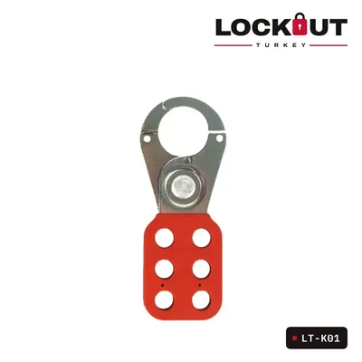
20 ürün
Kilit Çoklandırıcılar
Aynı ekipman üzerinde birden fazla kişi çalışıyorsa her biri kendi kilidini takmalıdır. Çoklandırıcı tek kilitleme noktasını çoğaltır; son kilit çıkarılmadan enerji geri verilemez.
Kilit Çoklandırıcılar ürünleri
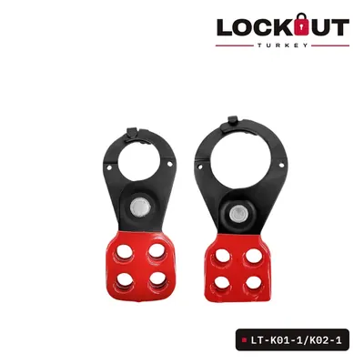
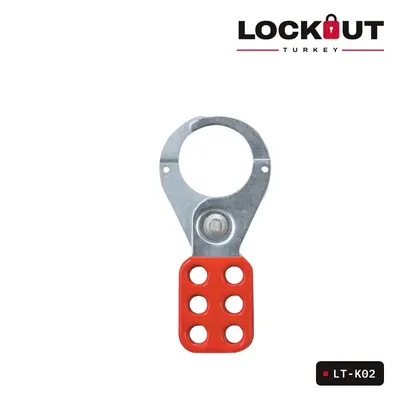
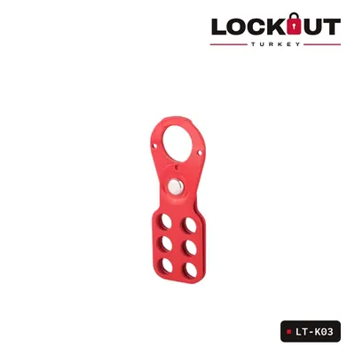
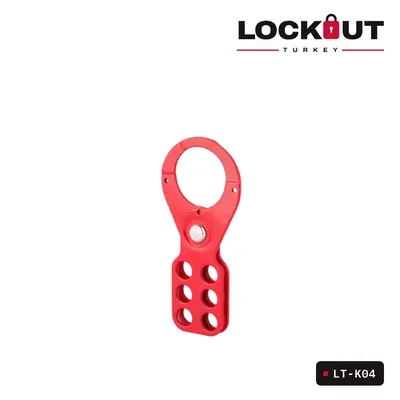
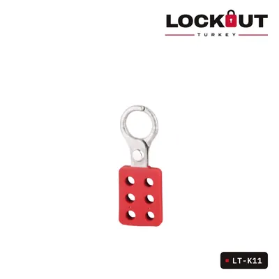
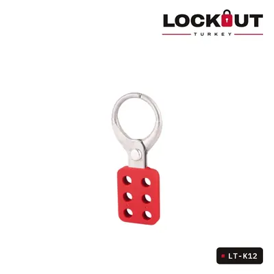
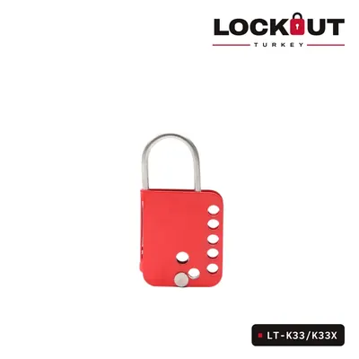
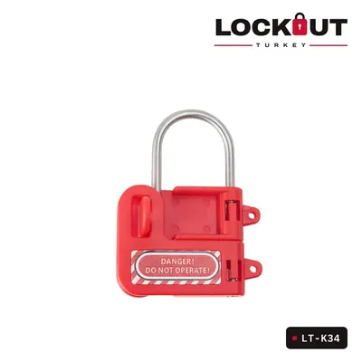
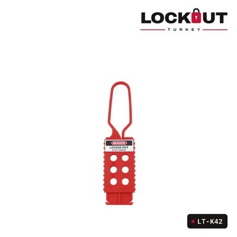
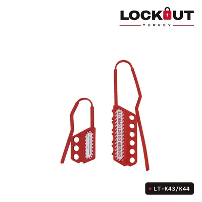
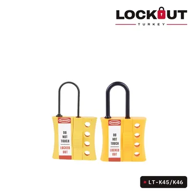
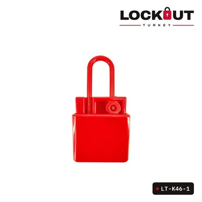
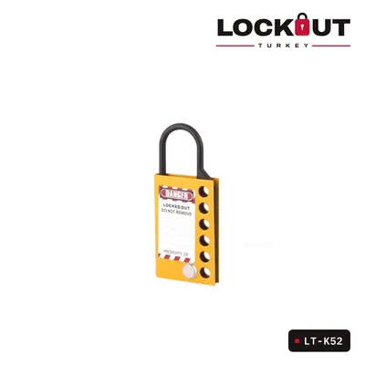
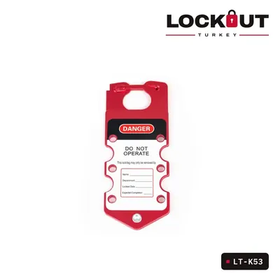
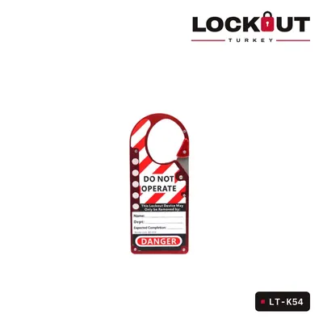
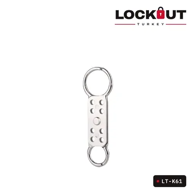
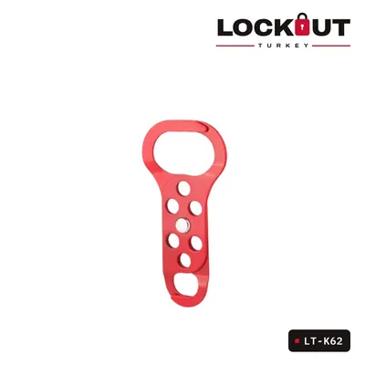
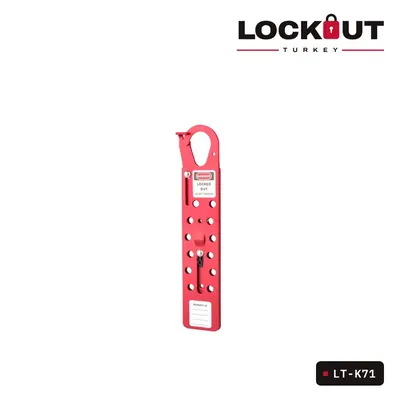
Tesisiniz için toplu teklif mi lazım?
Ürünleri teklif sepetine ekleyin ya da ihtiyacınızı WhatsApp’tan yazın; size özel teklifle dönelim.